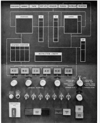

BC plans Data Class next Fall
Idaho Statesman May 29, 1966
Preparing American youth for the challenges of the computer age is a role of every college in the country.
And Boise College, for One, is going right to the heart of the matter, It's going to teach the kids
how to run the computers. The college is ready to launch a comprehensive data processing program next fall,
designed to turn out computer operators, programmers - and one day even fledgling systems analysts - for local
businesses.
The students will be learning the trade on the same computer that will file and compute
their academic records and grades - and the college's business records, inventory and payroll. Those
who graduate will be ready to step into a swelling number of computer jobs in southwest Idaho corporations,
banks, industries and even small businesses that are going to computers.
Frederick J. Keller, who arrived from Denver last month to set up the Boise College program, doubts that he
can turn out graduates fast enough to keep up with demand. In fact, he says, he may have trouble turning
out graduates.
Similar programs around the country have run into "pluck out" problems, he said, Students
are enticed by attractive, good paying jobs before graduation day comes around. A widely circulated story in
computer circles is that a data processing program in Miami schools lost so many students to Cape Kennedy and
local business that only one student ever graduated. The Boise College program will begin with a two-year course
teaching students how to plan computer work, wire the machines and operate them, Keller
said.
They call that "hands on" experience in the trade and Keller said his graduates will get 96 hours of it -
about six hours more than they would get in an on-the-job training course in industry.
The students also will take courses in computer and business machine theory, uses of various machines
and such familiar business courses as accounting and management.
The student will know more theory and be better grounded in business training, but he will not
have had the experience of the on-the-job trainee, Keller said."Once he gets the experience, he'll
be in a better position to advance."
The highest skill in computer operation is systems analysis, deciding which machine should compute what
-and in what sequence- for greatest efficiency.
Keller said two-year graduates should be trainable for that skill and a four-year course is planned later
to more directly prepare students for it.